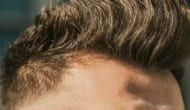

<section class="advantage__section">
    <div class="container">
        <div class="advantage__section-wrapper">
            <div class="advantage__block advantage__block-1">
                <p class="advantage__text">
                    Круглі щупальця R-форми, точна ріжуча головка. <br>
                    <span>Ультракороткі зубці 0,1 мм.</span>
                </p>
            </div>
            <div class="advantage__block advantage__block-2">
                <p class="advantage__text">
                    Витончена сталева Т-подібна форма, підходить для всіх типів текстури волосся. <br>
                    <span>Без іржі, без алергії, легко миється.</span>
                </p>
            </div>
            <div class="advantage__block advantage__block-3">
                <h2 class="advantage__title">
                    Універсальний
                    інструмент
                </h2>
                <p class="advantage__text">
                     Чіткі лінії без подразнень <br> на шкірі
                </p>
                <div class="advantage__items">
                    <div class="advantage__item">
                        
                        <p>оформлення бороди</p>
                    </div>
                    <div class="advantage__item">
                        
                        <p>створення окантовки</p>
                    </div>
                    <div class="advantage__item">
                        
                        <p>підрівнювання скронь</p>
                    </div>
                    <div class="advantage__item">
                        
                        <p>стрижка волосся</p>
                    </div>
                </div>
            </div>
        </div>
    </div>
</section>